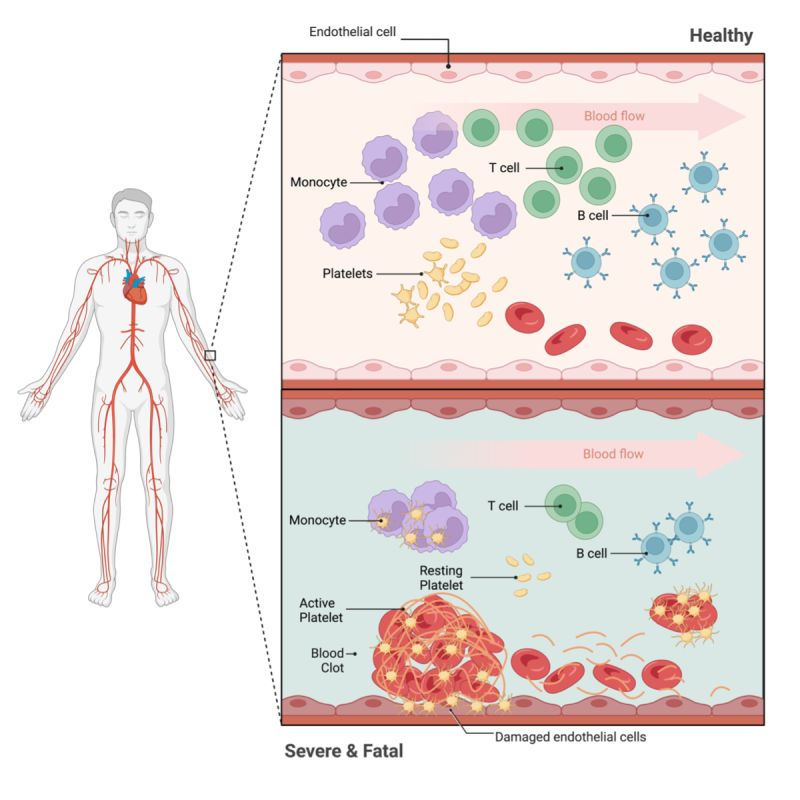
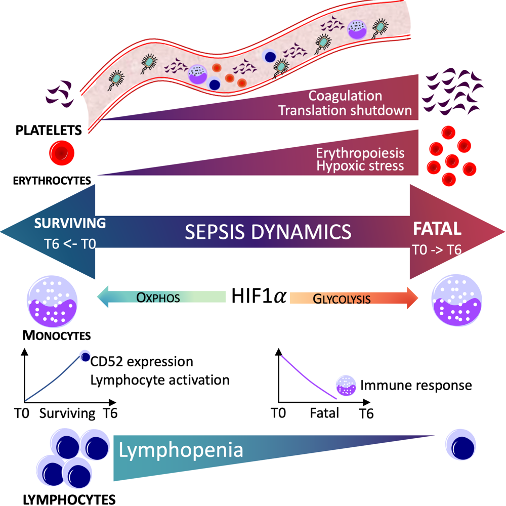
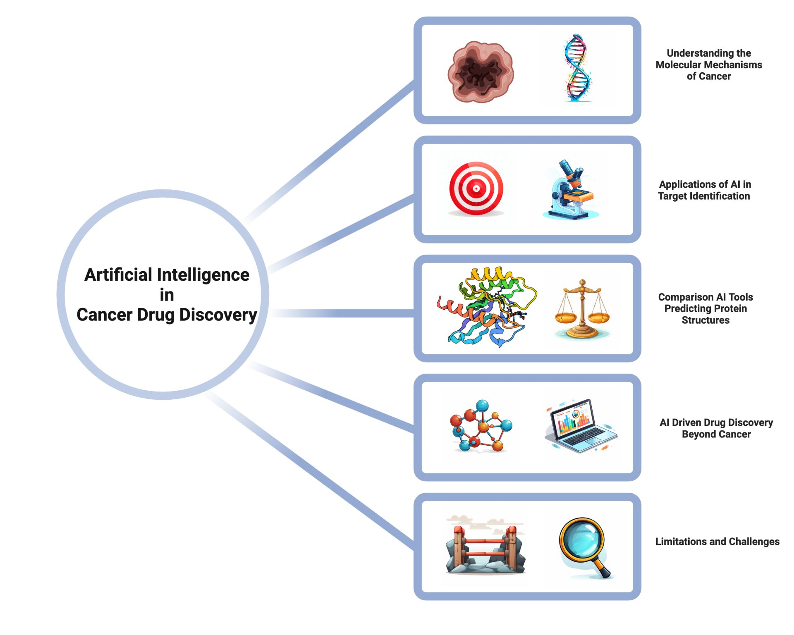

Highlighted Projects
Deciphering Abnormal Platelet Subpopulations in COVID-19, Sepsis and Systemic Lupus Erythematosus through Machine Learning and Single-Cell Transcriptomics
Qiu, Xinru, Meera G. Nair, Lukasz Jaroszewski, and Adam Godzik
2024

Key Findings:
- Platelet-to-T cell ratio (Pla-T ratio) is a strong predictor of patient survival.
- Platelets play a role in lymphocyte activation, proliferation, and differentiation.
- Platelet-monocyte aggregation is associated with disease severity in both COVID-19 and sepsis.
- We identified distinct platelet subpopulations that were overrepresented in convalescent, surviving, and fatal patients.
- Notably, three types of platelets were highly represented in patients with fatal outcomes: a coagulation cluster (C4), a hypoxic cluster (C9), a quiescent cluster (C11).
Implications:
- Monitoring changes in the Pla-T ratio and platelet subpopulations could be valuable for predicting patient outcomes and guiding treatment decisions.
- Understanding the interplay between platelets and other immune cells may pave the way for therapies that modulate the immune response and improve patient outcomes.
- Targeting heparanase activity, which is increased in platelets during sepsis and COVID-19, could be a promising therapeutic strategy.
Bioinformatics Approaches:
- scRNA-seq Data Integration: Combined 413 samples from COVID-19, sepsis, SLE, and healthy individuals
- Focus on Platelets: Extracted platelet expression data from PBMC datasets
- Quality Control and Preprocessing: Used source data annotations, HGNChelper tool, and Harmony software
- Cell Type Identification and Clustering: Used Seurat, SingleR, and Louvain Clustering algorithm
- Differential Gene Expression Analysis: Employed MAST method from Seurat
- Machine Learning: Used XGB and DNN for biomarker identification and feature importance
- Pathway and Gene Set Enrichment Analysis: Used clusterProfiler, AddModuleScore, DOSE, and GSVA packages
- Ligand-Receptor Interaction Analysis: Based on iTALK database
- Pseudotime Trajectory Inference: Constructed using Monocle3
Dynamic changes in human single-cell transcriptional signatures during fatal sepsis
Qiu, Xinru, Jiang Li, Jeff Bonenfant, Lukasz Jaroszewski, Aarti Mittal, Walter Klein, Adam Godzik, and Meera G. Nair
2021

Key Findings:
- Lymphocyte subsets are reduced in sepsis, especially in fatal outcomes.
- Platelets and erythroid precursors emerge in late-stage fatal sepsis.
- Sepsis drives hypoxic stress associated with disease severity and dysfunctional erythropoiesis.
- Monocytes in fatal sepsis undergo immune suppression.
- Increased CD52 expression within hours of sepsis recognition is associated with improved sepsis outcomes.
Implications:
- Antiplatelet therapies may be beneficial for treating severe sepsis.
- S100A9 may be a valuable biomarker to stratify sepsis severity.
- CD52 may serve as both a biomarker for sepsis progression and a therapeutic target to promote immune homeostasis.
Bioinformatics Approaches:
- Data Processing and Quality Control: Used Cell Ranger Software Suite
- Data Integration and Batch Effect Removal: Utilized Seurat v.3
- Dimensionality Reduction and Clustering: Performed using Seurat
- Cell Type Annotation: Used a consensus-based approach combining information from canonical marker genes, SingleR, and scCATCH
- Differential Gene Expression Analysis: Employed MAST method from Seurat
- Pathway Enrichment Analysis: Conducted using clusterProfiler
- Module Score Analysis: Calculated to assess expression of predefined gene sets
Advances in AI for Protein Structure Prediction: Implications for Cancer Drug Discovery and Development
Qiu, Xinru, Han Li, Greg Ver Steeg, and Adam Godzik
2024

Key Findings:
- AI is revolutionizing drug development, streamlining processes and increasing success rates.
- Traditional drug development faces obstacles like high costs, long timelines, and high failure rates.
- AI-driven protein structure prediction provides valuable insights for drug discovery.
- Several AI algorithms offer distinct approaches to protein structure prediction:
- AlphaFold2 (AF2): High accuracy, relies on multiple sequence alignments
- ESMFold: Efficient for orphan proteins, faster than AF2
- RoseTTAFold: Unique "three-track" neural network architecture
- OpenFold: Open-source version of AF2, offers flexibility
- Generative AI is emerging as a powerful tool in drug development.
- AI-driven drug discovery is demonstrating success beyond cancer research.
Implications:
- Widespread adoption of AI could significantly alter the pharmaceutical landscape.
- Understanding strengths and limitations of different AI algorithms is crucial for effective application.
- Integration of AI necessitates careful consideration of data privacy, security, and validation procedures.
- Continued research in AI algorithms is essential for maximizing impact in drug discovery.
- AI-driven successes across diverse disease areas underscore potential to revolutionize healthcare.
Future Directions:
- Develop AI algorithms for predicting protein dynamics and ligand-induced folding.
- Expand applications of generative AI in designing novel proteins and antibodies.
- Integrate AI-driven approaches with traditional drug discovery methods.
- Address regulatory challenges posed by AI in pharmaceutical research.
- Explore AI applications in personalized medicine and rare disease treatment.